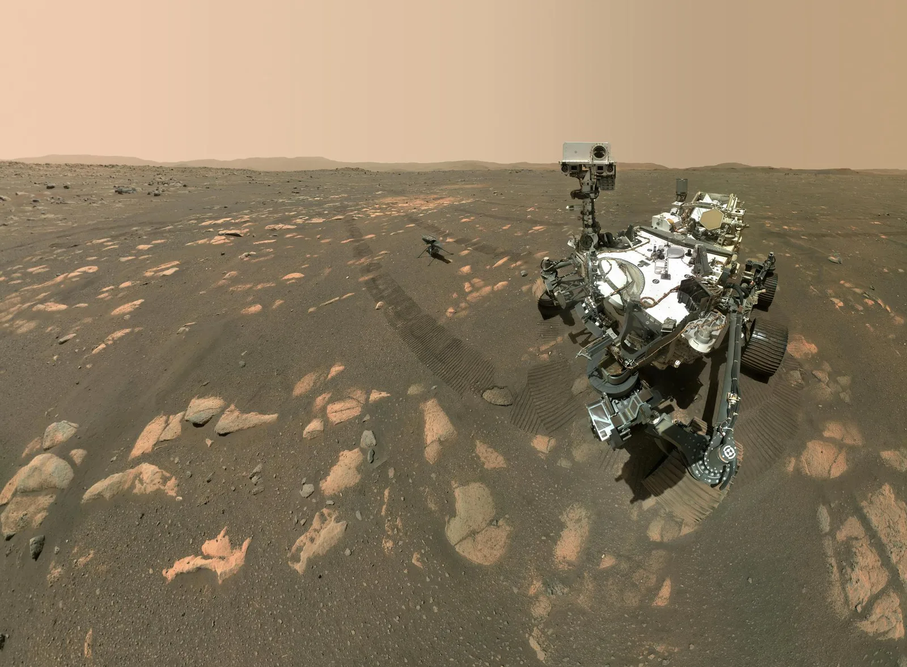
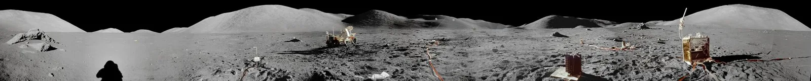
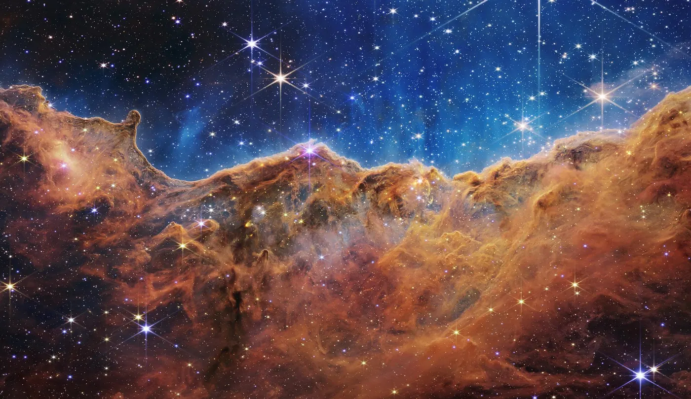
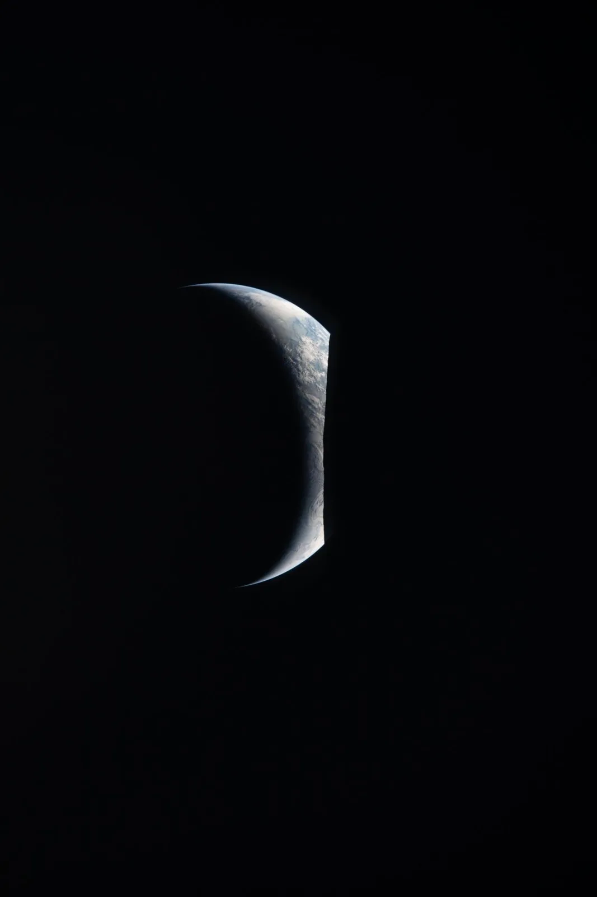
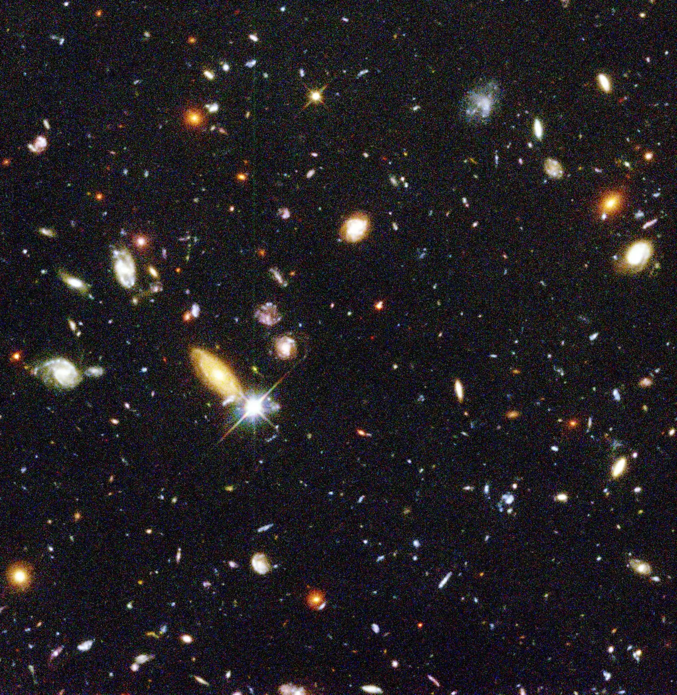
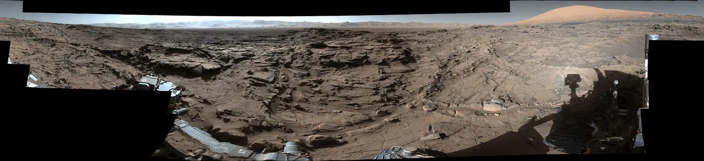
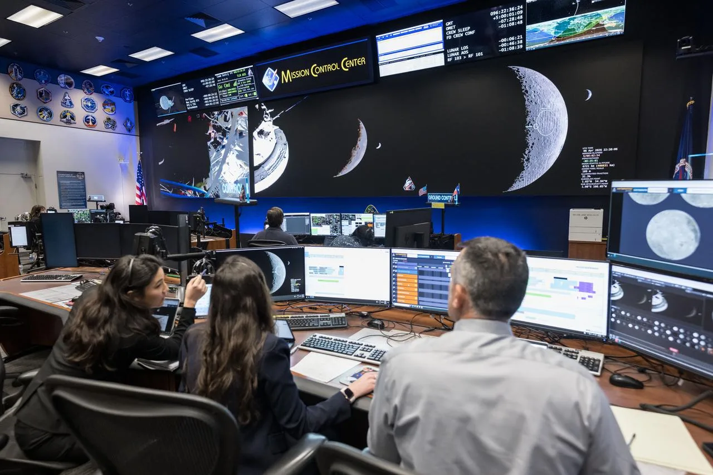

Public Sans
Interfaz base · 400 / 600 / 700
La base del sistema: botones, párrafos y formularios legibles a cualquier tamaño.
Orbital UI · Kit de diseño · NASA Space Apps 2026
Un sistema visual con olor a pólvora y estrellas: colores de señal, tipografías de misión, parches, bordes HUD, texturas de telemetría y componentes listos para una web con temática NASA. Como una fiesta de cumpleaños, pero en el espacio.
Negro de vacío para el fondo, azul institucional para la confianza, rojo de señal para la acción y cian de telemetría para los datos. Toca cualquier muestra para copiar su hex.
La interfaz habla en Public Sans e Inter; la misión grita en Michroma; los datos susurran en IBM Plex Mono; y la fiesta se pone en Bungee. Todas con subset latin + latin-ext y descargadas localmente.
Public Sans
Interfaz base · 400 / 600 / 700
La base del sistema: botones, párrafos y formularios legibles a cualquier tamaño.
Inter
Lectura · 400 / 600 / 800
Segunda voz de interfaz, con más altura de x y un ritmo muy cómodo en pantalla.
Michroma
Display · 400
Mission Control · Outpost Run · 30 Soles
Instrument Serif
Editorial · roman / italic
«El espacio no está lejos: está detrás de esta pantalla.»
IBM Plex Mono
Telemetría · 400 / 600
SOL 014 · 02:30 UTC · O₂ 21.4% · PWR 82%
DM Mono
Datos · 400 / 500
Δ 14 m 22 s · 3.63× ISS · −63.4 °C
Chakra Petch
HUD / sci-fi · 400 / 600 / 700
Shield integrity · signal locked
Bungee
Póster / fiesta · 400
Misión
cumpleaños
Chaflanes de 14 px, corchetes HUD, líneas de 1 px, órbitas punteadas, parches circulares y stickers torcidos. La forma correcta hace que una web parezca un artefacto espacial.
Superficie glass + esquinas técnicas + lectura mono. Úsalo para datos, misiones y estados del juego.
Parche de misión
SVG propio · 400×400
Eclipse
.ux-eclipse
Foil de misión
.ux-foil
Grosor · estilo · halo
Sticker torcido
Botones, badges, pestañas, formularios, medidores, tablas y tarjetas. Todo con estados de foco visibles, targets de 44 px y movimiento reducido cuando el sistema lo pide.
Outpost Run · Sol 014
Siguiente paso

Marte · JezeroEl rover y el primer dron en otro planeta, juntos en un autorretrato real.

Luna · Tauro-LitroUna panorámica de Apolo 17: el lugar más silencioso que ha pisado la humanidad.
La misión que devuelve humanos alrededor de la Luna. Pólvora, vapor y futuro.
| Hora | Evento | Nivel |
|---|---|---|
| 02:14 | Llamarada solar | M4.2 |
| 05:48 | Partículas SEP | Alto |
| 11:02 | Viento solar | Nominal |
Estrellas en CSS, grillas de blueprint, grano sutil, scanlines de CRT y foil metálico. Todos los efectos tienen versión estática: si el usuario pide menos movimiento, el kit lo respeta.
Chaflán + gradiente
El corte de esquina de 14 px es la firma visual de los paneles de este kit. Combínalo con un borde de 1 px y un halo del color de la misión.
CRT + telémetro
Ocho fotografías descargadas de la NASA Images API, optimizadas a WebP y con atribución. La NASA no patrocina ni respalda el proyecto: el crédito y la fecha son parte del diseño.





Atribución y licencia
Las imágenes son de NASA y se usan según las NASA Media Usage Guidelines. No se usa el emblema, sello ni logotipo oficial como marca del proyecto. El archivo assets/img/credits.json guarda título, ID y URL de cada foto.
Cómo usar una imagen
<figure class="ux-card">
<div class="ux-card__media">
<img src="…" alt="…" loading="lazy">
</div>
<figcaption class="ux-caption">NASA / JPL</figcaption>
</figure>